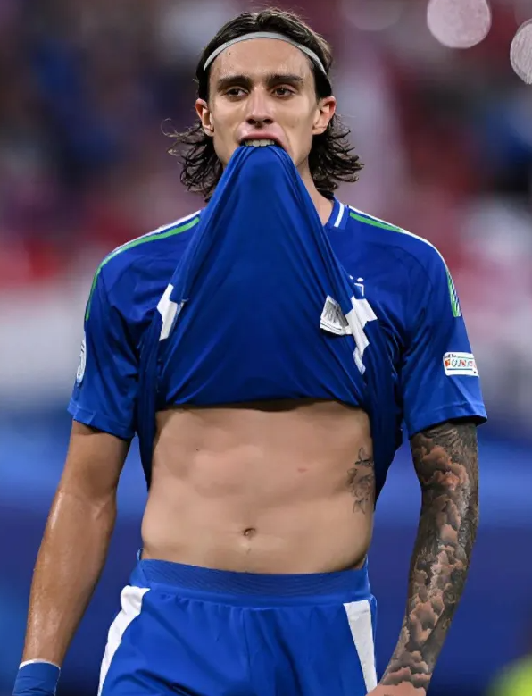
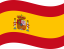

Shikamaru Nara
Informações Pessoais
Nome completo Shikamaru Nara
Data de nascimento 22/09/2001
Local de nascimento Barcelona, Espanha
Nacionalidade espanhol
Altura 1,86 m
Pé destro
Informações Profissionais
Clube atual Schalke 04
Número 12
Posição Zagueiro
Clubes da juventude
2010-2019  Oso Barcelona
2019-2021
 Schalke 04
Schalke 04
Clubes profissionais
2021-
Schalke 04
Carreira
Oso Barcelona
Nara começou a carreira no Oso Barcelona, clube juvenil de sua cidade natal, em 2010. Ficou por 9 anos atuando na equipe juvenil, disputando torneios de base até chamar a atenção de um olheiro alemão em 2018.
Schalke 04
No dia 10 de janeiro de 2019 Nara assinou contrato com o Schalke 04. Após dois anos na categoria de base subiu para a equipe profisisonal no ano de 2021, no final da temporada 2020/21, após o rebaixamento da equipe alemã. Ganhou espaço na equipe na temporada 2021/22 na disputa da Bundesliga 2. Disputou seu primeiro Dérbi de Ruhr no dia 11 de março de 2023, jogo realizado na Veltins-Arena que acabou empatado por 2x2. Virou titular da equipe de Gelsenkirchen na temporada 2023/24.